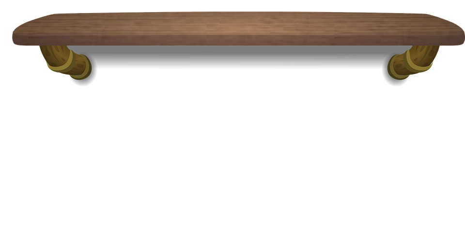
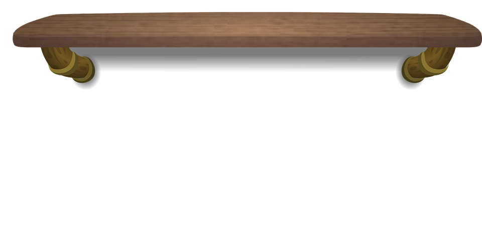
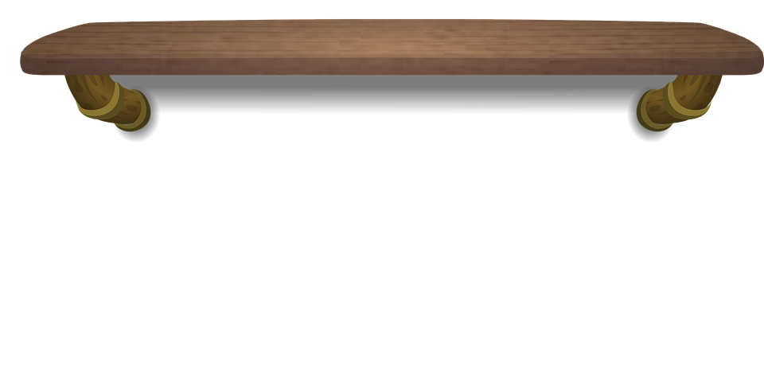
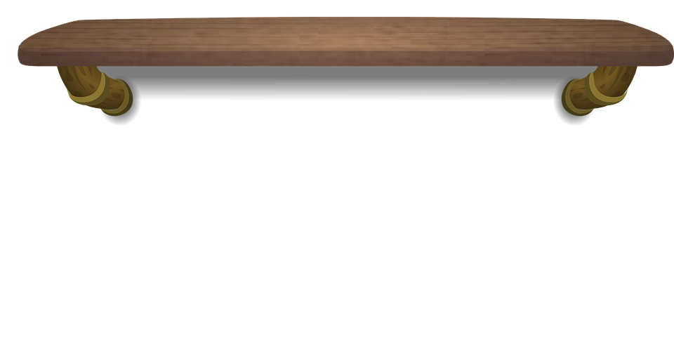

 



In the beginning of Fun Home, A Happy Death is discussed in the wake of Bruce Bechdel’s death, as Alison contemplates whether it was suicide or not. The line that Bruce has highlighted in A Happy Death is “he discovered the cruel paradox by which we always deceive ourselves twice about the people we love — first to their advantage, then to their disadvantage”, which Alison calls “a fitting epitaph for my parents’ marriage” (Bechdel 27). This applies to both sides in the context of the Bechdels’ marriage: Bruce deceives himself that he can have a picture-perfect life with Helen, and they get married, but that same belief coupled with his shame and desire causes their marriage to fall apart. Helen deceives herself about her husband’s problems and is willing to give him chances/stay around, which lets them get past the early days of their relationship, but that leeway she gives him lasts for entirely too long, so he manages to hurt her and the family frequently before she makes the decision to divorce him.
The true significance of the literary reference may lie in parallels. A Happy Death's protagonist has tuberculosis, and while it’s unclear, Bruce may well have a mental illness (he goes to psychiatrist, has frequent anger management issues, etc). The novel is divided into two sections: the “Natural Death” and the “Conscious Death”: the “Natural Death” is the protagonist’s boring, routine life at his desk job, like Bruce’s unfulfilling job as an English teacher and the constant heteronormative facade he puts on for others and his family. The “Conscious Death” is about the protagonist’s actual death after trying to find happiness for himself, but with Bruce, we’ll never know if he did find that happiness in the time before his own death.
There’s a lot of comparisons tied up in this specific reference, the obvious one being between Sisyphus and Bruce, too, as both of them face an uphill, never ending battle against their life’s burdens. It could even be argued that Bruce takes on the additional burdens of others’ deaths regularly at the funeral home. However, this reference mainly focuses on the contrast between a glamorous life and “une mort imbecile”, which roughly means “a fool’s death/a foolish death”. Ironically, Camus didn’t die A Happy Death: he died when he met with an accident in his sports car, and he had always considered dying in a car accident to be a fool’s death. Bruce Bechdel also dies in a vehicle accident when the Sunbeam truck hits him. Both had big dreams and had outwardly glamorous/perfect appearances, but died ignobly.
Camus and Bruce differ in their relationships to death, however, because Camus writes that “it is barely possible to speak of the experience of others’ deaths”, but as a mortician, Bruce witnesses that all the time, and it’s “all too convincing” to him(Bechdel 48). This seems to account for Camus’ conclusion that suicide is illogical and Bruce’s conclusion that it’s his way out (speculatively, anyway). The inherent absurdism in Bruce’s and Camus’ deaths is, to pull from the title, tragicomic, and is just one example of this tone set throughout the entire graphic novel.
Bruce sees himself in the Fitzgeralds and is entranced by them. The fact that the Fitzgeralds come up in his letters to Helen is interesting because F. Scott Fitzgerald wrote innumerable letters to his wife Zelda back home while he was serving in the army, just like the way Bruce is doing with Helen. He actually writes that Scott reminds him of himself, “especially the old emotional bankruptcy” (Bechdel 62). Clearly there’s a self-awareness about himself and an attempt to acknowledge his lack of emotional availability and unhealthy ways of expressing himself. Bruce is also compared to Zelda, which is part of the way Bechdel plays with gender and the traditional traits of masculinity and femininity in her work. Zelda and her father are both said to have a sort of “fluid charm” that couldn’t be captured on camera, which adds to the complexity of Bechdel’s relationship with her father, and the idea of charisma and his dark humors being inseparable from each other. Bruce calls Scott and Zelda “pathetic, fabulous, mediocre geniuses”, which seems like a summary of his own life (Bechdel 62).
He has pathetic elements to his life for his cowardly sneaking around and getting minors drunk, he is mediocre in that he is an average earner in his professions and in his suburban anonymity, but he is also fabulous in his artistic feats of restoration and meticulous attention to detail. In a way, Bruce seeks to emulate Scott’s genius in his work as well as and recreate the time in which he lives because he feels more glamorous and in control of his life. Roy comments in the library that “being in this room is like going back in time”, which is an illusion helped greatly by the constant drinking of sherry and the old-timey decor (Bechdel 65). Scott and Zelda got into bitter fights because of the drinking and partying they engaged in, like the fights between Bruce and Helen. The parallels between Scott’s most famous character, Jay Gatsby, and Bruce are unmissable as well: The Great Gatsby appears when Bruce gives it to Roy, and both Gatsby and Bruce control their own “self-willed metamorphosis from farmboy to prince”, or in Bruce’s case, the illusion of princeliness(Bechdel 63). The last image of Gatsby is his dead body floating in the pool, and it’s no accident that the very last page of the book depicts Bruce in a swimming pool, and the preceding panel is the truck that kills him. In the last, most eerie parallel of all, F. Scott Fitzgerald and Bruce Bechdel both die at the young age of 44.
The Importance of Being Earnest is being put on in the community theater, and her mother is performing in it as the leading role of Lady Augusta Bracknell. Bracknell is a sophisticated, proper, and powerful woman, who is often seen as a representation of Wilde’s opinion of the Victorian upper class and how they kept their power. Helen Bechdel is an exacting, precise woman who is also proper and manages to juggle a household with her thesis, individual creative pursuits, and being involved in the community theater. Augusta, coincidentally, happens to be her middle name. This would make Helen the repressive force, and while in many ways she is the victim of Bruce’s exploits, her traditional bond of marriage to him is what suffocates him. Additionally, she doesn’t take Alison’s coming out well, and Alison is left feeling “devastated” because of her disapproval: one of the enigmatic lines Helen writes in her response to Alison is “My life is tied firmly at this time to family and work, and I see your choice as a threat to both of these” (Bechdel 77). Clearly, there’s a standard that she’s holding herself to in terms of composure and her values, and upon examining the letter more closely, it’s disapproving but seemingly mostly out of concern that this will make it harder for Alison later in life because of society’s rules. Lady Bracknell gives Jack Worthing ruthless advice, and sees marriage mostly as a social and monetary alliance, which is mirrored in Helen’s letter and her self-professed cynicism about romantic love. In both Fun Home and The Importance of Being Earnest, there’s an engagement with these ideas as well as an understanding of them, but there’s also a critique and refusal to adhere to those values, because of society’s ongoing progress. Just because it might be best for their societal position doesn’t mean it’ll make Jack or Alison happy, and what has worked for Lady Bracknell/Helen isn’t applicable to others’ lives.
There’s many loosely disguised innuendos and critiques of Victorian society besides the instutition of marriage, and the hidden-in-plain-sight aspect of the play is that it is coded as gay. The characters criticize each other for inventing excuses so that they can avoid social obligations, and Algernon and Jack both use this strategy, called bunburying, to secretly visit their lovers (read: Wilde’s constant excursions to have his gay affairs with his lover, Alfred Douglas, male prostitutes, or any other men that struck his fancy). In the play, “illicit desire is encoded as one character’s uncontrollable gluttony”, especially for the cucumber sandwiches, and in the very next panel of the page, Bruce is “eating them faster than [the kids] can make them”, a very clear tie of that character to Bruce and his desire as well as his constant extramarital affairs(Bechdel 166-167).
The Ideal Husband is the other Wilde play, mentioned along with The Importance because they were playing at the same time, and it delves into this topic of a husband’s deception and the past sins of a person. It seems to argue that society needs to allow for redemption and forgiveness for the past. Feminist critique of the play has centered on its obvious sexism, because of its attempt to convey that women should be forgiving and less quick to judge their husbands and their past mistakes because of the hardships their husbands already go through in their daily lives.
Obviously, this play’s ideas bear a close resemblance to Oscar Wilde’s situation during the time at which these plays were playing. He tried to sue the father of his lover for libel when he called Wilde a sodomite, and underwent a lengthy legal trial, losing in the end and trying to justify his affairs as the “‘great affection of an elder for a younger man as there was between David and Jonathan’” (Bechdel 180). It’s clear that The Ideal Husband takes the stance it does because of Wilde’s own mistakes and desire to have public opinion as well as the private opinion of his family favor him. Bruce’s shame and guilt seem to beg for general understanding, but unlike Wilde, he isn’t preoccupied with his family or wife really thinks of him. He doesn’t really try to fight the charges and so there’s no impassioned defense of himself, but unlike Wilde, Bruce doesn't go to jail and there’s no extravagant drama. He voluntarily attends the counseling sessions, and both Helen and Alison suspect that he continues on with his affairs after the incident. A line from Wilde’s The Picture of Dorian Gray seems to summarize his mindset best: “‘The only way to get rid of a temptation is to yield to it’” (Bechdel 170).
Washington Square is often classified as a tragicomedy, just like Fun Home, and Alison’s mother Helen is described as a character “right out of James — a vigorous American idealist ensnared by degenerate continental forces” (Bechdel 66). This would make her father Bruce the “degenerate continental forces”, with the excessive drinking, affairs, and crimes. There’s a “twist on the usual heterosexual trope” in Washington Square, with Catherine Sloper, the protagonist, as the pursuer/lover, and Morris Townsend, the smooth fortune-hunter as the object of desire/beloved (Bechdel 66). Of course, there’s a twist on a common heterosexual marriage conflict plot, which is that Bruce is in fact, not heterosexual, and he’s also the one who takes immense pride in his appearance and is incredibly vain and sensitive about it. He sunbathes frequently, takes forever to style his hair, wears luxurious clothes and is fussy about the way Alison looks as well because there’s limits on the way he expresses his style because of his gender, but not on his daughter.
However, the main parallel in Washington Square is centered around Helen Bechdel and Catherine Sloper. Catherine starts out enamored of Morris, but grows as a character throughout the story after Morris is cruel to her and jilts her. She eventually comes to the realization that she deserves much better and that Morris is just taking advantage of her, resulting in a climactic scene where she refuses him. In the same vein, Helen and Bruce have a romantic start to their relationship with their poetic letters, but Bruce lets her down time after time with his exploits and terrible temper. She puts up with it throughout the years but she finally reaches a point where she knows she’s done with him, and comes to the conclusion that she’s going to divorce him and doesn’t need him anymore. It speaks to the strength of her character and her independence.
Bechdel writes that The Portrait of a Lady “runs more than a little parallel” to her parents’ “early days together” (Bechdel 71). The protagonist, Isabel Archer, is, like Helen Bechdel, an initially bright-eyed, idealistic woman who is ready for independence and fulfillment, but ends up with Gilbert Osmond, who is cultured but penniless, and has been having an affair with the woman who introduced them. Bruce Bechdel fits that trope of the artistic intellectual that he writes about in a letter to Alison later in the novel, who doesn’t have much money or morality but is well-read and good-looking. The double life is only later revealed to the trusting wife, but both Helen and Isabel are “too good for their own good”, staying and putting up with the adultery and giving up their artistic dreams for the sake of their family (72). Gilbert has a daughter by his first marriage, Pansy, and she begs Isabel to return, so the ending is left ambiguous as to whether Isabel will be noble and go back to Gilbert and stick it out for Pansy’s sake or have it her way and help Pansy but leave Gilbert. In Helen’s case, she likely sticks it out for as long as she does for the sake of her children and the stability of their childhoods, only confiding in Alison and revealing truths about her father after Alison has come of a certain age.
She gets a somewhat happier and unhappier ending than Isabel: she finally says she’ll divorce Bruce, but then he dies a short while later. The life they shared has come to an end, but at the same time, perhaps this frees her from torment in an admittedly sad, perverse way. She no longer has to deal with the burden of keeping the massive secrets of her husband’s other life and she doesn’t have to keep pretending that their marriage didn’t fall to pieces a long time ago. Through a feminist lens, the comparison to Henry James characters is both flattering, because of the steadfastness and integrity of Isabel and Helen, as well as a critique of the patriarchal structure and the institution of marriage that binds Isabel to Gilbert and Helen to Bruce. There’s a thin layer of awe when Alison describes her mother, and the reader shares it: how did she carry the burden of everything thrust upon her for so long? The answer comes, again, from the James characterization: the sheer strength of her moral character and her persistence enabled her to stay strong, even when being “‘ground in the very mill of the conventional’" (72).
Delta of Venusis one of the books Bechdel takes to her dorm from the library, and the panel illustrates her masturbating to the stories alone. The book is notable for its focus on the female sexual awakening as well as its subversiveness: Anais Nin was commissioned to write it for a wealthy male private collector, but she kept pushing at the limits and her client didn’t notice she was becoming more and more outlandish and inventive in her work. She gave female sexuality priority and a revolutionary, distinct, sex-positive voice. The title itself is an suggestive and unsubtle reference to female genitalia and sexuality, and it would make sense that Alison, who is both attracted to women and undergoing her own discoveries about her body would find pleasure in a work that centers women in their explorations of sex.
There are some gay men in the stories as well, and there are some dubious relationships between older and younger people, which, in the section of Fun Home where this book appears, helps subtly foreshadow the dramatic reveal of the illicit relationships between Bruce Bechdel and teenage boys. Coincidentally, the last story is titled “Marcel”, and Nin was absolutely influenced by Proust, so there’s another literary allusion involved to tie the revelation of Alison’s sexuality to the shock of her father’s.
Bechdel also seems to be taking inspiration from Nin with her candid illustrations of these scenes of her life, explicitly showing women seeking and achieving sexual gratification. Nin was also bisexual, and lesbian and bisexual women appeared in this collection of stories and were given the same attention to detail and lyrical descriptions as the more conventional (if anything in Delta of Venus can really be described as conventional) heterosexual pairings. Even today, these scenes of Bechdel’s book are still pretty bold in their frank and full portrayals of female sexuality, and absolutely help to pave the way and normalize this content.
Remembrance of Things Past is a novel in seven volumes, the first of which is Swann’s Way. This is where the recurring symbol of the lilac originates: they’re Bruce’s favorite flower, and the thing about lilacs is that they begin to fade out even before they reach their prime, which obviously refers to the way Bruce dies an untimely death in his middle age. The tragic beauty in it appeals to Bruce’s sense of melancholy and aesthetic simultaneously. Additionally, Marcel Proust and Bruce Bechdel are both gay, and the direct parallel is with the title of the second volume of Remembrance of Things Past, which is In The Shadow of Young Girls in Flower. With Proust’s penchant for “transposing...gender”, this would be young boys instead, and Alison writes that her father “would cultivate these young men like orchids” (Bechdel 95). The object of Proust’s affections was a young chauffeur/secretary named Alfred, and Bruce’s was Roy, their yardwork assistant/babysitter. Both Proust and Bruce have a common sort of detached aesthetic distance (as evidenced in the centerfold photograph of the book) to the young men. Of course, this was very much illegal in Proust’s time, and is only just starting to gain some social traction when Alison is growing up. It’s a source of great shame to Bruce, and his life’s efforts all center around both satisfying his inner desires while also maintaining appearances for the sake of societal expectations.
The idea of maintaining appearances is reflected in the third volume of the book, The Guermantes Way, when the narrator meets a very rich and glamorous family, the Guermantes, and aspires to be on their level, meeting their social circle and attempting to emulate their behavior (reminiscent of the way Bruce tries to emulate the Fitzgeralds and make the Bechdel house, as well as himself, look timeless and beautiful). At the end, Charles Swann appears again, but even though he’s near death, the Guermantes family tells him that he’s going to outlive them. This ties into the recurring theme of the ephemerality and self-destructive tendencies that are tied up in this kind of high life, which ultimately claim Bruce as well.
The fourth volume of the book is Cities of The Plain, which means “Sodom and Gomorrah”, which are two cities in the Bible that are notorious for their sin. They have become synonymous with extreme immorality and depravity, and many interpret the sins of the cities to be homosexuality (though that reading has changed in the last few decades). In this volume, the narrator witnesses a gay encounter and reflects about “inverts” and how they can’t live in the open, comparing them to flowers because their reproduction is purely chance-based. Inversion, specifically just the term “inverts”, is something Alison brings up time after time, particularly in regard to the simplified version of the gender matrix she places herself and her father in. The comparison to flowers hammers home the symbolism of her father’s constant gardening and the aforementioned lilacs and orchids.
The last reference to Remembrance of Things Past is the retranslation of its title to In Search of Lost Time, and Alison describes the word “lost” as not weighty enough as a translation for the word “perdu” which means “not just lost but ruined, undone, wasted, wrecked, and spoiled” (Bechdel 119). The grief, regret, and self-loathing bitterness that permeates Bruce’s life is conveyed through the word perdu — there seems to be an alternate history suggested with Bruce’s close association with the book, asking the reader to consider along with Alison what might have been if her parents didn’t get married. The potential for her father to have been happy, at the expense of her and her brothers never having been born is inextricable from the themes of speculation and memory that are so pervasive in Remembrance of Things Past. In fact, the entire structure of Fun Home seems to be deeply informed by Proust’s ideas of involuntary memory, with its circular structure, flashbacks, and tangents that arise from a particular flashpoint of an image in Bechdel’s memory of her childhood.
Leading into the incident with the enormous rat snake, Alison demands that her brother call her Albert instead, which, she reflects, is “a tidy melding of Proust’s real Alfred and his fictional Albertine” (113). This melding allows for Proust’s sexuality to be represented in Alison, who is also gay, but in an inversion of Proust’s transposition of gender, she is expressing masculine tendencies while still identifying as a woman. Bechdel offers a poststructuralist reading of the snake symbol, which to Alison is “obviously a phallus, yet a more ancient and universal symbol of the feminine principle would be hard to come by. Perhaps this undifferentiation, this nonduality, is the point” (Bechdel 116). This existence in the gray area, especially coupled with the appearance of her father in the panel mentioning “nonduality” reflects the way that she and her father are at odds with their desired gender expression.
Alison wants to dress as the bulldyke does, more straightforward, masculine, and utility-focused, while her father, ever the aesthete, desires the freedom afforded to women to express beauty through their clothing. The bulldyke and the snake are inextricable because of the way they represent blurring and blending of feminine and masculine presentation. Alison reacts with joy because she identifies with her, but Bruce becomes upset due to his own identification with her in terms of queerness. In the same vein, the snake may represent internalized homophobia in Bruce’s case, but in Alison’s view, it morphs into a “symbol for queer subjectivity, [so it] is no longer a monstrous serpent” but instead a representation of kinship and queer possibility (Fox 531).
In the ending panel of the page, The Worm Ouroboros appears as Alison and her father face each other. The Worm Ouroboros is a high fantasy epic that has many elements of heroism and quests that echo the Elizabethan era. The crux of the story is that there is a war between the witch land and demon land, and the demon heroes prevail, but they feel it is a hollow victory because their entire lives had been structured around that massive conflict. So they wish it could continue, and their wish is granted — the story ends at the same place it begins, with tidings of war. The central antagonists and conflict find a direct parallel in Alison and Bruce: the ongoing conflict between them (particularly by the end) seems to help both of them work out some issues and grow as intellectuals. The witches and demons respect each other as each others’ only worthy foes, just as Bruce begins to “sense [Alison’s] potential as an intellectual companion” and by the end, they’ve swapped books and stories (Bechdel 198). Just as the demons are left adrift and wondering what they could possibly do now, Alison is forced to grapple with the question of where her father’s influence ends and her own identity begins.
This idea is furthered when Bechdel comments that serpents, like the one in the Ouroboros symbol, “imply cyclicality, life from death, creation from destruction” (Bechdel 116). Of course, Fun Home itself obviously has a cyclical, spiraling structure: her newly discovered sexuality has opened up a new world to her, while her father’s ongoing battle with his own orientation comes to an end right around then with the divorce and then the death. Like The Worm Ouroboros, it opens and closes with the same scenes, and there are many panels which swap Alison out for her father (an example is when they take the family photo), implying that his story is continued through her. The most obvious example of all follows from that concept: her creation of this memoir is only possible because of his destruction.
The Odyssey is a foundational text for Fun Home, as it has its own significance to the novel while also informing the structure of Ulysses, which also heavily features in Fun Home. The beginning of Alison’s own personal journey is her discovery of her sexuality in the bookstore, when it sets her off onto “ an odyssey which, consisting as it did in a gradual, episodic and inevitable convergence with my father, was very nearly as epic as the original” (Bechdel 203). There are multiple milestone points in her odyssey, but not in the same order as they occur in the original poem; this is clearly a rejection of the traditional structure of the hero’s arc (after all, in one letter, Bruce does echo a line from Ulysses by saying he’s not a hero), and a reinterpretation of the work by a feminist lesbian woman. She centers her own personal experience and rejects “what seems like a paternalistic literary tradition oblivious to her own concerns” (Freedman 133). She favors books like Beginning with O by Olga Broumas, which can be seen on her bed when she’s lying down with Joan. This is a book about letting go and unabashed eroticism. It’s steeped in Greek myth and ties back to the Odyssey (which also begins with O) and links to a highly sexual and famous quote from the Gerty Macdowell section of Ulysses: “then the Roman candle burst and it was like a sigh of O! and everyone cried O! O! in raptures and it gushed out of it a stream of rain gold hair threads” (Joyce 670). Bechdel uses it as a subtle reclamation of female sexuality and throughout Fun Home there is a continued, unwavering focus on it, rather than the exploits of men like Stephen, Bloom, Odysseus — or even her father, whose adventures are mentioned, but Alison’s are portrayed in detail.
Some notable examples of the Odyssey’s obstacle scheme appearing in Fun Home are Nestor, the sirens, the Cyclops, and the monsters Scylla and Charybdis. Her version of Nestor is Professor Avery, who runs the Joyce seminar, but he’s an ineffective mentor and she feels “beset by the Scylla and Charybdis of literary criticism — unimaginative symbolic readings, and stifling interpretive dead ends” (Freedman 133). The sirens are all the books she’s reading that are pulling her off her metaphorical course, distracting her from the actual course content she’s supposed to be pursuing. The Cyclops is her girlfriend, Joan, who has one eye. Odysseus interacts with the Cyclops by cleverly deceiving him by telling him that his name is “Nobody”. There’s definite humor in the twist Bechdel puts on it here (suffice to say, she uses her mouth for a different purpose).
Interestingly, in the scheme of the Odyssey and the traditional parental dynamic, it makes more sense for Bruce Bechdel to be Odysseus, Alison to be Telemachus, and Helen to be Penelope. In one way, that dynamic fits, because Odysseus, like Bruce, is a swaggering, philandering intellectual man coming home to his son (in a curious case of yet another gender transposition, Alison, his daughter), who looks up to him and follows his example, and his steadfast, faithful wife Penelope, like Helen, who has never once erred, in contrast to her husband.
Alison, as the author of her own sweeping narrative, manages to identify herself with all three members of that family. She is Odysseus, charting her own epic quest, having plenty of experiences along the way, and finding her way home; she is Telemachus, waiting for his father, keeping up with news of his journey, and eventually making his own way by using his father as an inspiration (but also growing into his own identity); and she is also Penelope, who weaves and unweaves the shroud just as Alison ravels and unravels the threads of the tapestry of her life. Penelope unweaves it until Odysseus’ return “finalizes the terms of the story she inhabits”, just as Alison’s journey is interwoven with her fathers to the point where its entire structure is dependent on him and his death: the memoir is both “the story of Alison Bechdel’s return and Bruce Bechdel’s shroud” (Sadri 120).
Ulysses informs much of the story, especially Bechdel’s relationship with her father, as well as the continual relations between its source text, The Odyssey, and Bechdel’s own journey to self-discovery. Ulysses is Bruce’s all-time favorite book, and he gives Alison a copy for her use in class. In an interview, Bechdel states that she “‘ wrote all over that copy of Ulysses [as a]... fuck you to both to my dad and to James Joyce” (Freedman 127). On page 209 of Fun Home, she’s sketching an image of Bloom putting a candlestick at the doorway. She’s carving her own path and asserting her own identity as an artist over Joyce’s: in this way, Joyce “stands in for an overbearing, inaccessible literary tradition, and also, in the autobiographical logic of the narrative, for an overbearing, inaccessible father” (Freedman 127-128). Joyce is synonymous with her father for most of the book: she’s paying homage to Joyce by using his own techniques to inform her story, just as she shares her father’s “inventive bent”; but she is simultaneously challenging and critiquing him by using a form that neither of them would have, and by telling it from her own irreverent perspective (Bechdel 231). Bechdel also draws comparisons to Joyce’s real life: if Joyce is a substitute for her father, his mistreatment of Sylvia Beach, Margaret Anderson, and Jane Heap, the lesbian women who defended him and took a risk on his novel, directly parallels Bruce’s mistreatment and cool attitude toward Alison, who defends him through her writing, and just wants his attention and validation. Although, in the now-frequent transposition of characters, Bechdel is also “Joyce here, the master artificer, crafting a narrative that is in some ways like a betrayal of family, and in other ways an appropriation of another person’s story” (Freedman 139).
From a post-structuralist view of the dualities in each novel, Alison aligns herself with Leopold Bloom, the Odysseus surrogate of Ulysses, making her the one who goes on the journey and has to deal with the reality of her father’s deceptions (like Leopold does with his wife, Molly). As the novel’s second protagonist, this would make Bruce Stephen Dedalus. Both have unrealized artistic dreams, and Stephen languishes as a history teacher while Bruce is an English teacher. Stephen and Bruce both attempt to understand themselves through fictional characters, Stephen through Hamlet Bruce through Gatsby, the Bundren family in Faulkner’s As I Lay Dying, and Stephen himself, to name a few. However, Stephen’s troubles revolve around his parents, and Alison is the one in Fun Home who fits into that category, with the “swirling, sucking Charybdis of [her] family” (Bechdel 213). Both Stephen and Alison struggle to define their own identities as separate from their critical, also artistic fathers. That would make Bruce Bloom, with the twist that he’s the unfaithful one instead of his wife. Both characters’ masculinity is constantly called into question, and both have somewhat androgynous/feminine qualities to them.
The car scene tackles this idea: Alison attempts to make a true and meaningful connection with her father on the basis of their shared homosexuality and their respective issues with gender expression in childhood, but the mutual confessional is “not the sobbing, joyous reunion of Odysseus and Telemachus. It was more like fatherless Stephen and sonless Bloom having their equivocal late night cocoa at 7 Eccles Street” (Bechdel 221). The “fatherless” piece makes sense because of Bruce’s continued aloofness and disconnect from the rest of the family, but it’s interesting that Bruce is “sonless” in the structure of the sentence. Stephen and Bloom, for their part, “[contemplate] the other in both mirrors of the reciprocal flesh of theirhisnothis fellow faces”, but in the Fun Home panel, their moment of missed connection is punctuated by the fact that Alison looks at him, but he doesn’t look at her (Joyce 1156). Alison has always been more present in her father’s life, but her father doesn’t feel the kinship with her that she does with him. Their version of the Ithaca chapter in Ulysses is swamped with the myriad of things that will never come to fruition: their interaction is supremely unsatisfying, not providing any sort of closure, which feels all the more necessary with Bruce’s death so soon after. Speculation is all she can offer after that: she cites the “lengthy, libidinal yes” at the end of Ulysses and wonders why her father ended up renouncing his own truth(Bechdel 228). In telling her own story, she takes the opposite track from her father, declaring her own sexuality and identity and living honestly by it.
In an interview with Hillary Chute, Bechdel says that Fun Home’s “first and last chapters reference Joyce, like bookends” (Chute 3). Indeed, Joyce is a sort of framing device for Bechdel’s entire narrative: the very first chapter is titled “Old Father, Old Artificer”, which are the final lines of A Portrait of the Artist As a Young Man, and indicate Stephen Dedalus’ intent to stay an artist for the rest of his life. This is applicable to Bruce as the architect of Greek myth, Daedalus, for whom Stephen is named, because of his art in preservation, curation, and illusion of his home, literally, and his facade of being a good husband, father, and teacher, figuratively. It obviously applies to Bechdel because she’s the one still living, and has defiantly struck out and become a comic book artist and graphic novelist in complete rebellion to the medium her parents both understand and love so well.
When Alison is a freshman in college she tells her father she is reading A Portrait and he replies, “Good. You damn well better identify with every word” (Bechdel 201). Bruce Bechdel is an artist in his own right, and the book is both a portrait of him as a father and a portrait of Bechdel, the illustrator and writer of the story, as a young woman. Juxtaposing Bruce with Stephen Dedalus reveals a shared love of aesthetics and sensual beauty, and there are clear parallels between the way Stephen sins in the beginning constantly, and Bruce’s own laundry list of misconduct, including the affairs as well as “shoplifting...speeding tickets...lying…[and] his rages” (Bechdel 216). Stephen seeks absolution, just as Bruce expresses a desire to be better, even if he doesn’t follow through on it like Stephen does.
The story of Icarus is entwined with the identification with Daedalus: Bechdel evokes the image of Icarus’ tragic fall in juxtaposition with her father’s eventual suicide, but also positions herself as Icarus “undertaking a risky artistic and personal journey” (Freedman 132). Alison and her father end up experiencing both sides of the tragedy in the myth. Alison feels Daedalus’ grief at her father/Icarus’ fall, but she is also the one testing her own wings (much like Stephen Dedalus at the end of A Portrait). Meanwhile, her father has built this life around himself and has carefully architected a labyrinthine facade to hide away the monstrous Minotaur of his sexuality (complete with the occasional “sacrifices”/affairs to sate its desires), but ultimately perishes, seemingly unable to cope with the weight of everything he’s carrying around.
The late-night car ride confessional scene is brought about because Bruce gave Alison a copy of Colette’s Earthly Paradise before she even came out as lesbian, and she attempts to connect to him and his own experiences by way of mentioning the book. While Colette had numerous affairs with women over the years, and thus is relatable to Alison, her second marriage to a man was seen by many to be purely for the sake of public appearances and continued her dalliances on the side, a narrative which no doubt felt all too familiar to Bruce.
Colette’s work seems to be Bechdel’s own personal Ulysses, even earning a comparison to the Nausicaa of her own personal odyssey through exploring her sexuality. Perhaps it’s more in line with the sirens, however, because it lures the reader in by starting out heady and sensual, but in the same breath, the writing goes from beauty and grace to darker images, like death, “with that same voluptuous detail” (Bechdel 208). When thinking about it in this regard, it makes sense that her father, who is an aesthete vain about his home, garden, and personal appearance, but is also tied to the theme of mortality by way of his suicide and his part-time job as an undertaker, is the one to give this book to her.
Colette is also a master of physical detail in her writing, and while Bechdel’s style is quite economic due to her page constraints, it somehow manages to evoke verbosity, both through the density of the writing and the way in which she manages to cram in immense amounts of small details into her drawings so that every single panel feels like its own story. The dynamic way Bechdel’s characters are posed and the sometimes filmic quality of the panel composition feel like they’ve been influenced by Colette and her capacity for conjuring a vivid image. Both authors use a lot of humor in their writing and refuse to shy away from the ugly truths and minor details that make a story so vivid. The most similar thing about their characterizations is the compassion with which they draw them: they’re both generous and nuanced, and even in the wittiest of moments, there manages to be a tinge of melancholy to it.
Alison picks up Flying during her exploration of LGBT literature in the library, describing Millett as a “latter-day Colette, with the libertine aristocrats exchanged for conceptual artists and radical feminists” (217). The central cast of each writer’s stories seems to explain why it appeals to her father so much: the “libertine aristocrats” populate not only Colette’s works, but Fitzgerald’s, Wilde’s, and many others that her father loves. The concept of transposition that came up with Proust is once again applicable here, since it’s fundamentally the same dynamics described, just transposed to a different time with different labels.
The aristocrats were the elite because of their wealth, and in Flying they represent an aspirational crowd for creatives and intellectuals. Flying thus becomes a symbol about feeling like you’re above everyone else as well as the soaring highs and drops of her lifestyle. Colette was a member of the class she wrote about so frequently, and Kate Millett knows her crowd as well, documenting her life and thoughts in a semi-stream-of-consciousness, movie-like style that truly does feel like flying because of the breakneck pace. It’s why Bruce admires her so much: she lives loud and proud and is unashamed of herself and her sexuality, becoming a pioneer in the same way Joyce was a pioneer, with a philosophy Bruce aspires to and cannot ever hope to follow.
With their exchanges of Earthly Paradise and Flying, Alison and Bruce have essentially traded advice/knowledge, and Bruce, the vicarious student trying to relive his glory days through his daughter’s English classes, is finally learning something new rather than trying to pass it on. Flying is also a very explicit connection to the motif of Icarus and Daedalus: Alison is the one to give Bruce flight, so to speak, but he falls before they can deepen their budding bond over the subject. In contrast, Alison is the one diving and therefore flying in the very last panel, and that last image of Bruce makes him a sort of successful Daedalus by succeeding in catching his child.
Word is Out is a collection of transcripts of interviews shown in the seminal documentary film of the same name, and is an icon of the emerging gay rights movement of the 70s. It was the very first feature-length documentary of its kind, and was made by gay filmmakers. It was one of the first films to ever portray run-of-the-mill lesbian and gay people in a positive and realistic light, and tell the stories of their lives in the way normal biopics would be shot, with the same care and worth given to stories about straight people. The book, too, was at the forefront of gay nonfiction that was sympathethic to the community and provided an accurate, honest, normal portrayal of it, helping many people outside the community understand its struggles, pain, and marginalization.
The panel shown in Fun Home is that of Elsa, a 77 year old woman born in 1898, declaring, “as far as I’m concerned, I was born that way” (Bechdel 74). At a time when being gay was viewed as an active choice or a mental illness, this was an extremely radical idea, and it helps Alison come to terms with it and accept herself much quicker than would probably have been possible had she not had access to resources that let her know she was not alone. Bruce never has that growing up, and the guilt, shame and danger of his sexuality during his formative years combined with the small town in which he lives is a combination of repression he just can’t manage to shake for his entire life.
Fun Home, too, is like Word is Out in that it portrays two queer people, Alison and Bruce, in a realistic, nuanced way, detailing the mundanities of their lives, the joy and pride and tenderness they hold, and their very human failures. Bruce, for all his shortcomings, is never demonized. He’s a complicated man, but Bechdel makes sure we see the good along with the bad. It’s an iconic, trendsetting work in its own right for increasing the visibility of gay people in the media and broadening the scope of what categories they receive attention in.